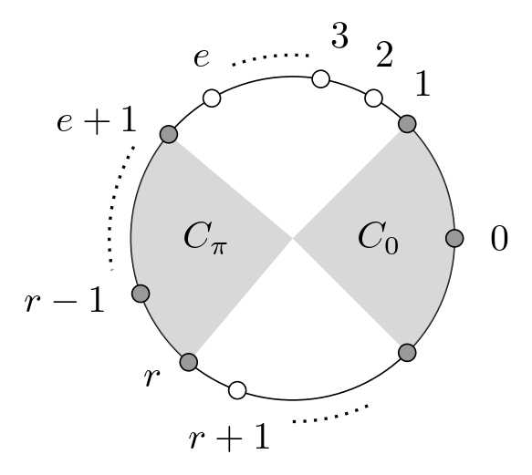
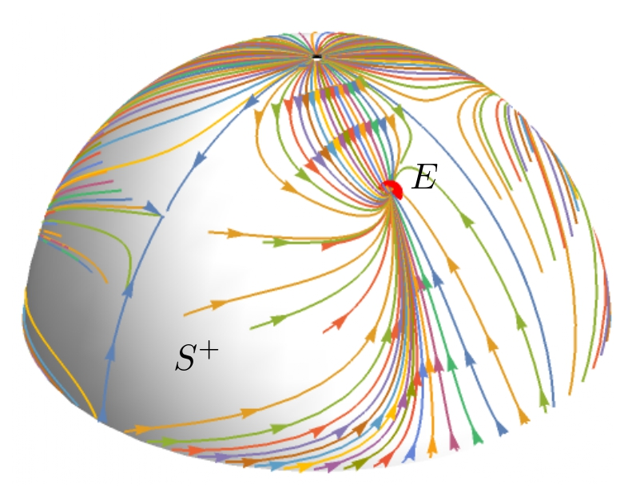

Short CV
- Contents
- 1. Education
- 2. Employments
- 3. Supervision and organisation
- 4. Grants
1. Education
Related areas and topics
| 10.2024 - 03.2025 | Lecturer, Hochschule Bremen |
| 05.2023 - 06.2024 | Postdoc, University of Münster |
2. Projects
Project participations
- DFG project number 456849348
Applicant: Prof. Dr. M. Pirner Subject Area: Mathematics, Optics, Quantum Optics and Physics of Atoms, Molecules and Plasmas Term: since 2021 Participation: since 6/2023
Modeling and mathematical description of concrete physical applications in the context of kinetic theory using the Bathnagar-Gross-Krook equationWe want to consider physical phenomena in the kinetic regime that are described by the so called Boltzmann equation. In many of applications, the Boltzmann equation is seen as the equation which describes physical situations very appropriately. However, the disadvantage of this equation is that the term which describes the interactions of the particles is very complicated, so the model is very inefficient in numerical simulations. If the phenomenon is close to a thermodynamic equilibrium, one can formally derive the so called Bhatnagar-Gross-Krook (BGK) equation. This approximation is much simpler than Boltzmann, and therefore much more efficient in numerical simulations. Therefore, this approximation is the method of choice in a lot of applications. However, this approximation can capture less physics than the full Boltzmann equation.The aim of this proposal is the following. Given a general kinetic model (an extension of the Boltzmann equation for example for gas mixtures, with chemical reactions, with internal degrees of freedom or for example the Landau-Fokker-Planck equation as the grazing collision limit for a plasma), how can we formally approximate it by a BGK type equation? Moreover, we want to get a better picture in which cases the BGK approximation is appropriate to describe physical situations. We want to study in which situations and in which ways it is possible to include more physics into the BGK model. For this, on one hand, we want to consider the modeling of certain physical situations (inertial confinement fusion, re-entrance of a space shuttle) in order to see if the BGK model can be endowed with as much physics as possible to describe the physical situation appropriately. On the other hand, we want to study several extensions of the one species BGK model in a theoretical way. Which influence does this extension have on the qualitative behavior of the solution? Which physical properties can be described and shown with this extension? If there is more than one possibility to extend the model to include a certain physical properties, can one quantify the differences of these different approach? Which influence do they have on the qualitative behavior of the solution?When this project is finished, we hope to have shown that BGK modeling has a much larger area of validity than it is commonly believed today. This will turn out to be extremely useful in applications and its numerical simulations.
- DFG project number 384027439
Applicant: Prof. Dr. J. Rademacher Subject Area: Mathematics Term: from 2017 to 2021 Participation: from 2021 to 2021 
Illustration of GHCA step size classes which are introduced to determine topological entropy (Keßeböhmer, Rademacher, Ulbrich. Dynamics and topological entropy of 1D Greenberg-Hastings cellular automata, see publications)
Illustration of local stability of unperturbed polar system corresponding to ODE system for analytic kink positions (Pauthier, Rademacher, Ulbrich. Weak and strong interaction of excitation kinks in scalar parabolic equations, see publications)
Ergodic theory of nonlinear waves in discrete and continuous excitable mediaIn this project we have studied and compared fully discrete and continuous models of excitable media. Such media frequently occur in spatially extended physical, chemical and biological systems. Here, a sufficiently large perturbation from a stable rest state triggers an excitation, which is transferred to its neighbours and is followed by refractory return to the rest state. Nonlinear dynamical systems can model such media and in agreement with real and experimental observations, reproduce the propagation of localized traveling waves. A paradigm for excitable media are nerve axons and myocardium in which a depolarising electrical perturbation triggers uni-directionally moving action potentials as a means of information transfer. Disfunctional transfer leads to various live threatening diseases so that an analysis of fundamental principles may ultimately help treatments. The modelling and analysis of excitable media is dominated by partial differential equations (PDEs), which fit well to an effectively space-time continuous physical situation. However, for instance myelinated nerve axons possess a discrete structure and a sufficiently general rigorous mathematical theory for interacting travelling waves in PDE is currently not available. Cellular automata (CA) provide an alternative model type in which space, time and states lie in discrete sets. In this project, we were able to fully characterize the long term dynamics of the so-called Greenberg-Hastings CA (GHCA) for excitable media in terms of specific wave dynamics, in particular ‘action potentials’ that annihilate upon collision. Moreover, we were able to determine the dynamical complexity in the sense of topological entropy. Concerning the continuum PDE perspective, we have obtained numerous results based on the so- called theta-model for neurons. On the one hand, we have verified the occurrence of annihilation sequences that roughly qualitatively correspond to those in the GHCA. On the other hand, we found that information on the initial positions is ‘forgotten’ when moving through the medium, so that the entropic complexity in the PDE based on positional data is reduced compared to GHCA. We have further corrobated this by a reduction of the dynamics to a system of so-called ordinary differential equations and analysis of its dynamics. In contrast, in the more complex FitzHugh-Nagumo PDE, we have numerically found that pulses replicate in a certain parameter regime. We have identified a subtle novel mechanism for instability in this regime that triggers this process. Moreover, we found that the stronger the fast/slow scale separation, the higher-dimensional the instability is.
3. Publications
In progress
- Discrete hypocoercivity for a nonlinear generation-recombination model.
joint work with L. Liu and M. Pirner
Refereed journal articles
- A. Pauthier, J.D.M. Rademacher, D. Ulbrich.
Weak and strong interaction of excitation kinks in scalar parabolic equations J Dyn Diff Equat. Published: 30 July 2021; Volume 35, pages 2199-2235, (2023) - M. Keßeböhmer, J.D.M. Rademacher, D. Ulbrich.
Dynamics and topological entropy of 1D Greenberg-Hastings cellular automata.
Ergodic Theory and Dynamical Systems. 2021;41(5):1397-1430
Theses
- D. Ulbrich.
Ergodic theory of nonlinear waves in discrete and continuous excitable media.
Dissertation, 2021